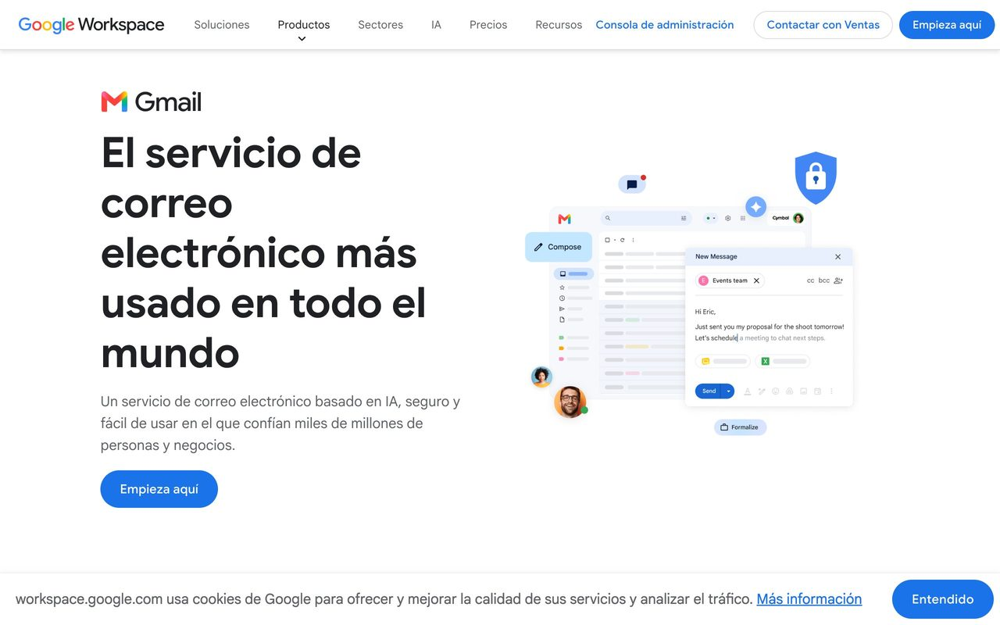
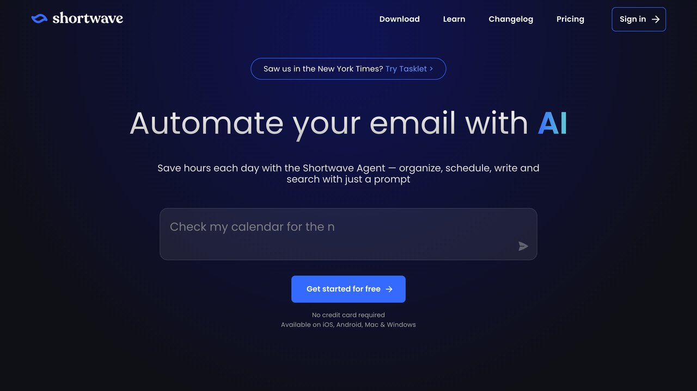

El correo es una de las tareas donde la IA ahorra más tiempo real, porque casi todo el trabajo es repetitivo: clasificar, resumir, redactar respuestas parecidas una y otra vez. Un estudio de McKinsey Global Institute sitúa la gestión de correo en torno al 28% de la jornada de un profesional de oficina — casi un tercio del día completo de trabajo dedicado solo a leer y escribir correos.

Las tres tareas que más tiempo devuelven
Clasificación y priorización
Un asistente conectado a tu correo (a través de MCP o una integración similar como las que se explican en la guía dedicada a MCP de este mismo sitio) puede leer los asuntos y remitentes entrantes y separar lo urgente de lo que puede esperar, sin que tengas que abrir cada mensaje para decidirlo tú mismo uno por uno. Esto por sí solo ya recupera bastante tiempo en bandejas con mucho volumen de mensajes diarios.
En la práctica, esto se traduce en categorías simples que puedes pedirle directamente al asistente: "Acción hoy", "Puede esperar a mañana", "Solo informativo, no requiere respuesta", "Posible spam o newsletter". No hace falta que la clasificación sea perfecta desde el primer día; lo que importa es que reduzca cuántos correos tienes que abrir uno a uno para decidir qué hacer con ellos. Con el tiempo, puedes afinar las reglas: por ejemplo, que cualquier correo de un cliente concreto se marque siempre como prioritario, o que los correos de facturación se agrupen aparte para revisarlos juntos una vez a la semana.
Resúmenes de hilos largos
Cuando un hilo de correo lleva veinte respuestas y solo necesitas saber "en qué quedó esto", pedir un resumen a la IA es mucho más rápido que leer todo el hilo de nuevo. Funciona especialmente bien para retomar conversaciones después de días sin mirarlas.
Un buen resumen de hilo no es solo "de qué habla el hilo": pídele explícitamente al asistente que separe tres cosas distintas: qué se acordó, qué queda pendiente y de quién es esa tarea pendiente. Un resumen genérico ("hablan de la reunión del proyecto X") te obliga casi a leer el hilo igualmente; un resumen estructurado con esas tres preguntas contestadas sí te permite decidir en diez segundos si necesitas intervenir o no.
Primeros borradores de respuesta
Para correos que siguen un patrón (confirmar una reunión, responder a una consulta habitual, hacer seguimiento a un cliente), la IA puede generar un primer borrador a partir de un resumen breve de lo que quieres decir. Tú revisas y ajustas el tono antes de enviar, en vez de escribir desde cero cada vez.
El truco para que estos borradores no suenen todos igual de genéricos es no pedir "redacta una respuesta educada": dale al asistente el contexto real (quién es el destinatario, qué relación tienes con él, qué tono usas normalmente) y un apunte de dos líneas sobre lo que quieres decir. El resultado se parece mucho más a algo que tú mismo escribirías, y necesita menos edición después.
Regla práctica: deja que la IA prepare, pero mantén el envío final bajo tu control mientras el sistema es nuevo. Automatizar el envío sin revisión es donde más rápido se pierde la confianza si algo sale mal.
Plantillas de instrucciones que puedes copiar
Puntos de partida reales para las tres tareas anteriores; ajusta el contexto entre corchetes a tu caso.
"Revisa los correos no leídos de hoy. Para cada uno, clasifícalo como Urgente, Puede esperar o Informativo, y da una razón de una línea. No los archives ni respondas, solo clasifica."
"Resume este hilo en tres apartados: 1) qué se ha acordado hasta ahora, 2) qué queda pendiente, 3) de quién es cada tarea pendiente. No repitas frases del hilo original, resume con tus propias palabras."
"Redacta una respuesta a este correo. El destinatario es [quién es y qué relación tenéis]. Quiero decir lo siguiente: [tus dos líneas]. Tono: [directo / cercano / formal]. No añadas frases de relleno."
Bandejas de equipo y categorías avanzadas
Todo lo anterior se complica un poco cuando la bandeja no es solo tuya, sino compartida entre varias personas (soporte, ventas, una cuenta general de info@). Ahí la clasificación automática sigue funcionando igual de bien, pero conviene añadir una capa más: quién de tu equipo debe encargarse de cada categoría. Un asistente conectado a una bandeja compartida puede etiquetar no solo "urgente o no urgente", sino también sugerir a qué persona o departamento correspondería cada correo entrante, basándose en el tema o en instrucciones que le des sobre quién lleva qué. Esto evita el problema clásico de las bandejas compartidas: correos que nadie contesta porque cada persona asume que lo hará otra.
Para bandejas de equipo es especialmente importante empezar con acceso de solo lectura y clasificación antes de dar permiso de envío a nadie: un borrador mal dirigido en una bandeja compartida puede llegar a un cliente equivocado con más facilidad que en una bandeja personal, precisamente porque hay más manos tocando el mismo sistema.
El correo pide que decidas algo (aprobar un presupuesto, elegir una fecha, confirmar un cambio) y nadie más puede tomar esa decisión concreta por ti en tu lugar.
Confirmar recepción, dar una fecha, algo que respondes de memoria sin pensar mucho.
Copias en hilos donde no se espera que intervengas.
Newsletters y notificaciones que podrías desactivar en origen.
Con estas cuatro categorías funcionando, el tiempo real de "decidir qué hacer con la bandeja" se reduce a revisar solo la primera con atención completa; el resto se procesa en bloque.
A veces la sensación de "me ahogo en correo" no se arregla con más automatización, sino con menos correo entrante desde el origen. Antes de invertir tiempo en configurar un asistente, vale la pena preguntarse: ¿cuántos de estos correos existen porque no hay un canal mejor para esa comunicación? Reuniones que se coordinan por correo cuando podrían ir directo al calendario, actualizaciones de estado que podrían vivir en un documento compartido en vez de generar un hilo nuevo cada semana, o notificaciones de herramientas que se podrían silenciar o agrupar en un resumen diario en vez de llegar una a una. La IA ayuda mucho con el volumen que sí tiene que pasar por el correo; no sustituye arreglar el proceso que genera correo innecesario en primer lugar.
«Automatizar lo repetitivo y mecánico, mantener el criterio humano en lo que tiene matiz: ese es el patrón que se repite en todos los casos reales que funcionan.»
Errores comunes y qué no conviene automatizar todavía
- Dar acceso de envío desde el primer día: empieza solo con permiso de lectura (clasificar y resumir) y añade la capacidad de redactar borradores más adelante, cuando ya confíes de verdad en cómo interpreta tus correos habituales
- No revisar los falsos positivos de la clasificación: si el asistente marca como "no urgente" algo que en realidad sí lo era, corrige la instrucción en ese mismo momento, no lo dejes pasar sin más para la próxima vez
- Pedir un tono genérico: "sé profesional" no dice nada útil al modelo; dale siempre ejemplos reales y concretos de cómo escribes tú normalmente en tus propios correos
- Automatizar el correo con clientes antes que el interno: los errores en comunicación interna se corrigen con una simple conversación cara a cara; los errores cometidos frente a un cliente externo son mucho más difíciles de deshacer después
Qué NO conviene automatizar del todo (todavía)
- Envío automático a clientes o jefes sin revisión humana, al menos en los primeros meses
- Decisiones con implicación legal o financiera que lleguen por correo
- Correos muy sensibles emocionalmente, donde el tono importa más que el contenido
Al automatizar borradores de respuesta, hay detalles pequeños que marcan la diferencia entre un borrador útil y uno que da más trabajo corregir que escribir de cero. Pide siempre al asistente que mantenga tu firma habitual sin modificarla, que no invente enlaces o adjuntos que no existen (si el correo original menciona "te adjunto el documento", el asistente no puede saber si tú lo vas a adjuntar de verdad, así que debe dejarte una nota recordándotelo en vez de asumir que ya está hecho), y que respete el formato de fecha y hora que usas normalmente. Son detalles menores por separado, pero sumados son la diferencia entre confiar en el sistema y tener que revisar cada borrador línea por línea igualmente.

Un caso real: la bandeja de un autónomo con muchos clientes
Imagina una consultora que recibe entre 40 y 60 correos al día: encargos nuevos, seguimientos de proyectos en marcha, facturas de proveedores y newsletters del sector. Antes de automatizar nada, su rutina era abrir el correo tres o cuatro veces al día y leer cada mensaje entero para decidir qué hacer con él, algo que le llevaba entre hora y media y dos horas repartidas en el día.
El primer cambio no fue meter un asistente de IA a redactar respuestas: fue pedirle solo clasificación durante la primera semana. Cada mañana, un resumen automático agrupaba los correos en tres bloques ("nuevos encargos", "seguimientos de proyectos activos", "administrativo y facturas") y dentro de cada bloque marcaba cuáles necesitaban respuesta ese mismo día. Esto por sí solo redujo el tiempo de "decidir qué mirar" a unos diez minutos.
La segunda semana añadió borradores automáticos solo para un tipo de correo muy repetitivo: las peticiones de presupuesto, que seguían siempre la misma estructura de respuesta. El asistente generaba un primer borrador con los datos del cliente y el tipo de servicio ya rellenados; la consultora solo ajustaba el precio concreto y el plazo antes de enviar. Ese paso concreto pasó de tardar diez minutos por correo a menos de dos. Lo que no se automatizó en ningún momento: las respuestas a clientes con quejas o negociaciones de precio, porque ahí el matiz humano importaba más que la velocidad. Este es el patrón que se repite en la mayoría de casos reales: automatizar lo repetitivo y mecánico, mantener el criterio humano en lo que tiene matiz.
Cómo montarlo, paso a paso
Activa las funciones de Gemini integradas en la propia bandeja antes de instalar nada externo. Cubren resumen y sugerencias de respuesta sin coste adicional si ya pagas Google Workspace o Gemini.
Copilot se integra de forma similar, con resumen de hilos y borradores directamente en la interfaz de correo habitual que ya usas cada día.
Conectar tu correo mediante MCP a un asistente general de IA te da control total sobre la lógica exacta de clasificación, a cambio de más tiempo de configuración inicial.
checklist Checklist antes de dar acceso a tu bandeja
Cómo saber si de verdad te está ahorrando tiempo
No hace falta un sistema complejo de medición: basta con fijarte en dos cosas durante las dos primeras semanas. Primero, cuántas veces al día abres el correo "solo para mirar" fuera de tus bloques de revisión programados — si esta cifra baja, la clasificación está funcionando. Segundo, cuánto tardas en responder un correo que sigue un patrón conocido — si el primer borrador te sirve como punto de partida real (aunque lo edites) en vez de tener que reescribirlo entero, ahí está el ahorro real. Si después de dos semanas sigues reescribiendo los borradores desde cero, el problema no es la herramienta: es que las instrucciones que le diste no tienen suficiente contexto sobre cómo escribes tú.
No todo el mundo necesita el mismo nivel de automatización. Si recibes menos de veinte correos al día, probablemente te basta con las funciones nativas de resumen y sugerencia de respuesta que ya trae tu cliente de correo: montar una integración a medida sería más tiempo de configuración que el tiempo que te ahorraría. Si estás por encima de cien correos diarios, o gestionas varias bandejas a la vez (soporte, ventas, administración), ahí sí compensa invertir en reglas de clasificación más finas y en conectar el correo a un asistente con memoria de contexto sobre tus clientes o proyectos habituales, porque el volumen hace que cada minuto ahorrado por correo se multiplique.
Un punto intermedio habitual: empezar con las herramientas nativas gratuitas durante el primer mes para validar que el hábito de revisar resúmenes en vez de correos sueltos funciona para ti, y solo después evaluar si necesitas algo más potente. Saltar directamente a la solución más compleja sin haber probado lo básico es un error común: se acaba invirtiendo tiempo en configurar reglas para un volumen de correo que ni siquiera tienes.
listmonk: tu newsletter en tu propio servidor
Si ya escribes tus correos con ayuda de la IA, el siguiente gasto suele ser la plataforma de envío, que cobra más cuantos más suscriptores tienes. listmonk es un gestor de newsletters y listas de correo de código abierto (AGPL-3.0) que instalas en tu propio servidor.
Qué ofrece
- Gestión de listas y suscriptores.
- Campañas con plantillas y envío programado.
- Estadísticas de cada campaña: rendimiento, rebotes y enlaces más pulsados.
- Un único programa, rápido, que guarda los datos en PostgreSQL.
Cómo empezar
- Prueba la demo en demo.listmonk.app para ver si te encaja.
- En un servidor con Docker, descarga el
docker-compose.ymldel repositorio y ejecutadocker compose up -d. - Configura un servicio de envío SMTP (por ejemplo, el de tu proveedor de correo o uno especializado).
- Importa tus suscriptores, crea tu primera campaña y envíate una prueba.
Lo honesto: necesitas conocimientos técnicos básicos, un servidor y un servicio SMTP, que pueden tener coste. Tú eres responsable de cumplir la normativa de protección de datos: envía solo a personas que hayan aceptado recibir tus correos.
Código: github.com/knadh/listmonk
Preguntas frecuentes
El resultado realista
No se trata de "vaciar la bandeja sola cada mañana": es reducir el tiempo de lectura y redacción a lo que realmente requiere tu criterio, dejando que la parte mecánica (clasificar, resumir, dar un primer borrador) la haga el asistente. La ganancia de tiempo suele notarse en la primera semana de uso constante.
Un sistema de correo automatizado no es "configúralo una vez y olvídate". Conviene revisar cada pocas semanas: si las categorías de clasificación siguen encajando con tu forma de trabajar actual (los proyectos cambian, los clientes cambian), si el asistente sigue interpretando bien el tono que quieres en los borradores, y si hay algún tipo de correo nuevo y repetitivo que haya aparecido y que valga la pena añadir a las reglas existentes. Los sistemas que funcionan bien a largo plazo no son los que se configuran perfectos desde el primer día, sino los que se ajustan poco a poco según lo que realmente pasa en la bandeja.
Si después de un mes no notas ninguna diferencia real en tu carga de correo, no es señal de que la idea no funcione, casi siempre es señal de que las reglas de clasificación se quedaron a medias o de que sigues revisando manualmente lo que ya deberías haber delegado. Vuelve a las reglas y ajústalas antes de descartar el sistema entero, revisando primero las que generan más falsos positivos.
No aceptamos patrocinios de proveedores de correo ni de complementos de terceros, para poder recomendar cada opción con criterio propio y sin conflicto de intereses.